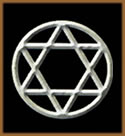
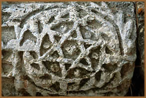
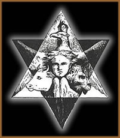

De um modo primitivo, por hexagrama,
podemos compreender como a reunião de seis letras ou caracteres;
já que a palavra tem origem no grego e significa seis linhas
ou seis caracteres (hex = seis; gramma = linha).
Portanto, uma seqüência de seis sinais gráficos
(letras ou figuras geométricas, por exemplo) pode ser considerada
um hexagrama. Assim, na filosofia oriental denominada I Ching,
o hexagrama possui uma representação linear.
Porém,
dentro da maioria das escolas esotéricas ocidentais, o
hexagrama usualmente assume a forma de uma estrela de seis pontas
e é conhecido também por Estrela de Davi, Selo
de Salomão, entre outros. É esta versão
que carrega inúmeros significados ao longo da história
e figura tanto como símbolo maior do Estado de Israel como
na simbologia ocultista. Mesmo havendo distinções
interpretativas entre o hexagrama com as linhas entre-laçadas
e o hexagrama com os triângulos sobrepostos, as definições
confundem-se e ampliam ainda mais as hipóteses das origens,
significados e aplicações.
Origens
A maioria das teorias que pretende encontrar a
origem específica do hexagrama está relacionada
ao judaísmo. Uma delas, sem embasamento histórico
confiável, faz alusão ao nome do Rei Davi. Segundo
a tradição judaica, o nome Davi era escrito com
apenas três letras no alfabeto hebraico: dalet, vav
e dalet. A primeira e última letra (dalet),
possui uma forma semelhante ao triângulo. Se uma delas for
invertida verticalmente e sobreposta à outra, forma-se
o hexagrama. Mais uma hipótese é de que o hexagrama
seja uma versão estilizada do lírio branco, flor
de seis pétalas que é identificada como o povo de
Israel no livro bíblico Cântico dos Cânticos.
Outra origem refere-se ao escudo do Rei Davi, que
possuía forma triangular e nele estava gravado o Grande
Nome Divino de 72 Letras, juntamente com as letras hebraicas
m, k, b e y (letras da palavra Macabi). Entretanto, neste
caso, não há uma linha nítida que associe
o símbolo ao Escudo de Davi (Marguen Davi), sendo
que a expressão Marguen Davi passou a ser utilizada referindo-se
ao hexagrama, apenas a partir do século XIV. Ainda, pode-se
supor que o símbolo tenha surgido na época de Bar
Kochba (132-135 d.C.) quando os judeus combatiam os romanos, passaram
a utilizar escudos mais resistentes, nos quais foram gravados
dois triângulos entre-laçados.
O símbolo
na história
Entretanto, desde a Idade do Bronze, símbolos
em forma de estrela, como o pentagrama
e o hexagrama, já eram encontrados em civilizações
distantes, tanto no aspecto geográfico como cultural, como
na Índia, Mesopotâmia e Grã-Bretanha.
O
mais antigo artefato judaico contendo um hexagrama de que
há registro, é um selo encontrado na cidade
de Sidon (Líbano), datado do século VII antes
de Cristo. Mesmo que no período do Segundo Templo,
os símbolos judaicos mais comuns eram o shofar,
o lulav e a menorá, foram encontrados
pentagramas e hexagramas em trabalhos arqueo-lógicos,
como no friso da sinagoga de Cafarnaum (século II
ou III d.C.) e uma lápide (ano 300 d.C.), no sul
da Itália. Na literatura judaica, uma referência
encontra-se no livro Eshkol Hakofer, do sábio
Yehudah ben Eliahu Hadasi, que viveu no século XII.
No capítulo 242, é citado costumes do povo
que, gradativamente, foram sofrendo mutações
e o símbolo assume um caráter místico:
"e os sete anjos na Mezuzá foram escritos
- Miguel e Gabriel [...] o Eterno irá guardar-te
e este símbolo chamado Escudo de Davi é escrito
em todos os anjos e no final da Mezuzá...".
A bíblia cristã, possivelmente,
faz referência ao hexagrama através de uma
metáfora citando animais de seis asas: "...os
quatro animais tinham, cada um de per si, seis asas, e ao
redor, e por dentro, estavam cheios de olhos; e não
descansam nem de dia nem de noite..." (Apocalipse
- 4:8).
A utilização ornamental de estrelas,
de cinco ou de seis pontas, estendeu-se durante a Idade Média
aos povos muçulmanos e cristãos e o hexagrama é
encontrado em ambas as religiões. Iluminuras de manuscritos
hebraicos medievais também contêm hexagramas. Ainda
na era medieval, encontram-se os primeiros amuletos de proteção
em que surge o hexagrama, como no Mezuzot (pergaminho-amuleto
do judaísmo).
A partir do século XIII, na Espanha e na
Alemanha, encontra-se manuscritos bíblicos nos quais partes
da messorá (tradição oral judaica) são
escritas em micrografia, em forma de hexagrama. Até o século
XVI, os sábios cabalistas acreditavam que o símbolo
não deveria ser desenhado com simples linhas geométricas;
mas sim composto com determinados nomes sagrados e suas combinações.
Em 1354, o rei da Bohemia, Carlos IV (Karel), concedeu
à comunidade judia de Praga, o privilégio de uma
bandeira, que foi confeccionada num fundo vermelho e o hexagrama,
centralizado, em dourado. Dessa forma, o símbolo, conhecido
também como Marguen Davi (Escudo de Davi),
adquiriu uma conotação religiosa e tornou-se também
uma referência do estado.
A partir do século XVII, o hexagrama tornou-se
emblema oficial de várias comunidades judaicas. Em meados
do século XVII, em Viena, foi gravado sobre uma pedra que
delimitava os bairros judeus e cristãos, juntamente com
uma cruz. Quando os judeus foram expulsos desta cidade, levaram
o símbolo para as outras cidades, como a Moravia e Amsterdã.
No ano de 1799, foi utilizado para representar o povo judeu em
uma gravura anti-semita. No decorrer dos séculos XIII e
XIX, algumas instituições, como as sociedades beneficentes,
usavam o símbolo em seus documentos. Em 1933, sob a decisão
de Adolf Hitler, a Estrela Judaica (como os nazistas,
pejorativamente, referiam-se ao símbolo) foi utilizada
nas vestimentas dos judeus para que fossem facilmente reconhecidos.
Apenas em 1948, o hexagrama foi adotado pela bandeira do estado
de Israel e tornou-se a maior referência do judaísmo.
O místico
hexagrama
Além de ser um símbolo que representa
uma nação, ter sido considerado um "símbolo
de desonra" no Terceiro Reich, e utilizado por instituições
independentes ao longo da história, o hexagrama também
traz um forte apelo ocultista.
Segundo a obra de Albert G. Mackey sobre a maçonaria,
The Symbolism of Freemasonry os dois triângulos
entrelaçados representam a união das forças
ativa e passiva na natureza, os pólos feminino e masculino,
yoni e linga (representações dos
genitais no hinduísmo). Sendo o triângulo voltado
para baixo o símbolo do princípio feminino e o triângulo
voltado para cima representando o princípio masculino.
Portanto, nesta interpretação, o hexagrama possui
um simbolismo sexual. O hexagrama também foi adotado na
Maçonaria do Arco Real e, neste caso, segundo
o autor maçom Wes Cook, o símbolo representa equilíbrio
e harmonia.
Há também uma interpretação
na qual o triângulo voltado para baixo representa o céu
e o segundo triângulo simboliza a terra; de forma que um
interfira no outro. Supõe-se também que as seis
pontas representariam o domínio celeste sobre os quatro
ventos, sobre o que está em cima e sobre o que está
em baixo na terra.
Na Cabala judaica, o hexagrama faz alusão
às sete emanações divinas (sefirot)
inferiores. Cada um dos triângulos que formam os lados da
estrela representam uma emanação e o centro dos
triângulos maiores sobrepostos, representam a emanação
denominada Malchut. O filósofo Franz Rosenzweig atribui
um outro significado. Rosenzweig afirmou que um dos triângulos
seria a representação da base de "focos",
que caracterizam o pensamento do mundo (Deus), o homem e o mundo.
O outro representaria a posição do judaísmo
nestes assuntos, referindo-se aos três fundamentos principais
da religião: a Criação (a relação
entre Deus e o mundo), a revelação (relação
entre Deus e o homem) e a redenção (a relação
entre o homem e o mundo).
Numa
outra interpretação, provavelmente de base alquímica,
os triângulos componentes representam a água e o
fogo, e a junção destes elementos, normalmente associados
à figuras de animais. Há ainda suposições
menos plausíveis associando o hexagrama à ritos
"satânicos", ou como um poderoso instrumento para
evocações e conjurações malignas em
círculos de magia negra; ou associá-lo à
pegada de um suposto demônio conhecido por Trud.
Ainda, pode-se encontrar o número 666 ao se consi-derar
as duas faces de cada um dos seis triângulos externos, no
sentido horário e anti-horário (6 e 6), e as seis
linhas que compõem o hexágono interno (666). De
qualquer forma, dentro dos círculos ocultistas, o hexagrama
geralmente é visto com alguma palavra ou símbolo
gravado em seu centro para ser aplicado numa situação
específica, como potencializar um ritual ou evocar alguma
divindade.
Por
Spectrum